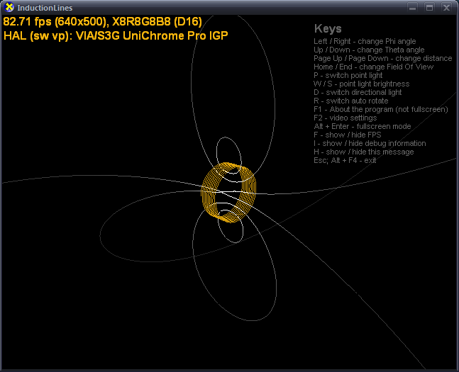
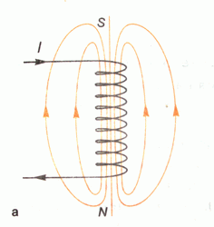
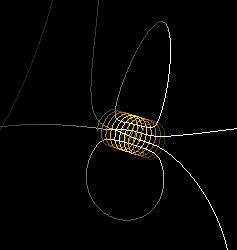

InductionLines v.1.1 Direct3D
Программа для построения линий магнитной индукции реальной катушки с током (соленоида) в трехмерном пространстве. Программа написана на языке C++ и использует технологию MS DirectX для рендеринга 3D-изображения. Распространяется по принципу freeware.

Цель написания: проверка правильности рисунка линий индукции в учебнике под ред. Жилко, Лавриненко и Марковича (ЖЛМ), стр. 109, рис. 82; проверка обоснованности критических высказываний В.И.Зеньковича по поводу этого рисунка.
Работа программы основана на законе Био-Савара-Лапласа-Зеньковича.
| Картинки линий индукции |
|---|
|  |  |
| ЖЛМ | InductionLines |
В результате многочисленных виртуальных "экспериментов" в программе InductionLines было подтверждено, что картинки, приведенные в учебнике, весьма далеки от реальности.
На этом сайте вы можете скачать программу InductionLines, научиться ее использовать, ознакомиться с ее плюсами и минусами.
| 
 Описание
Описание